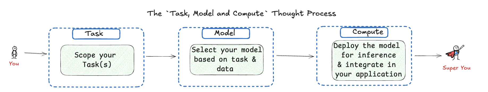
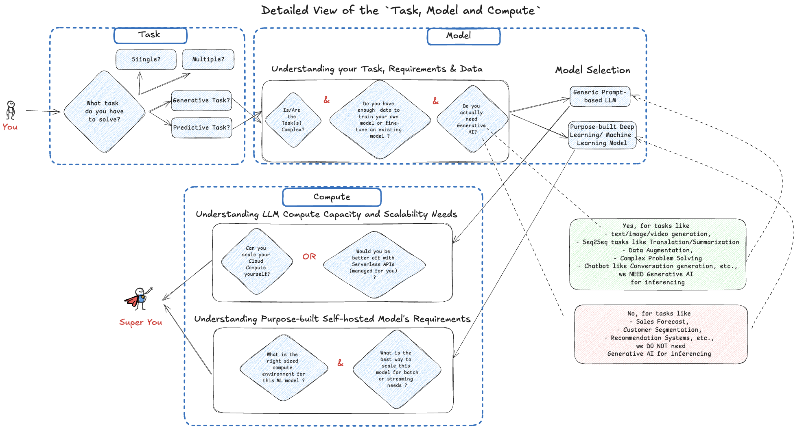
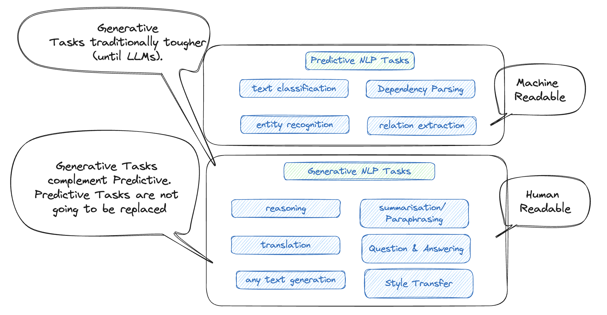
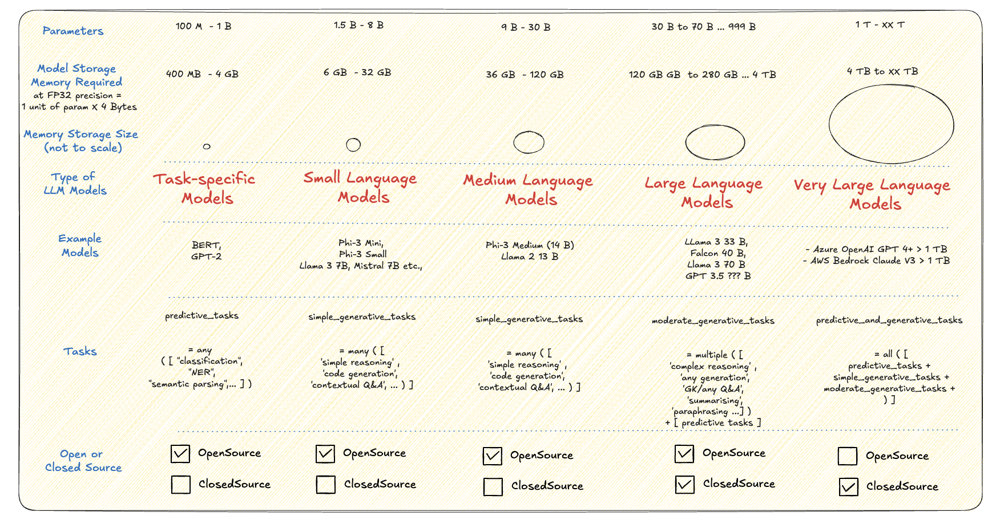
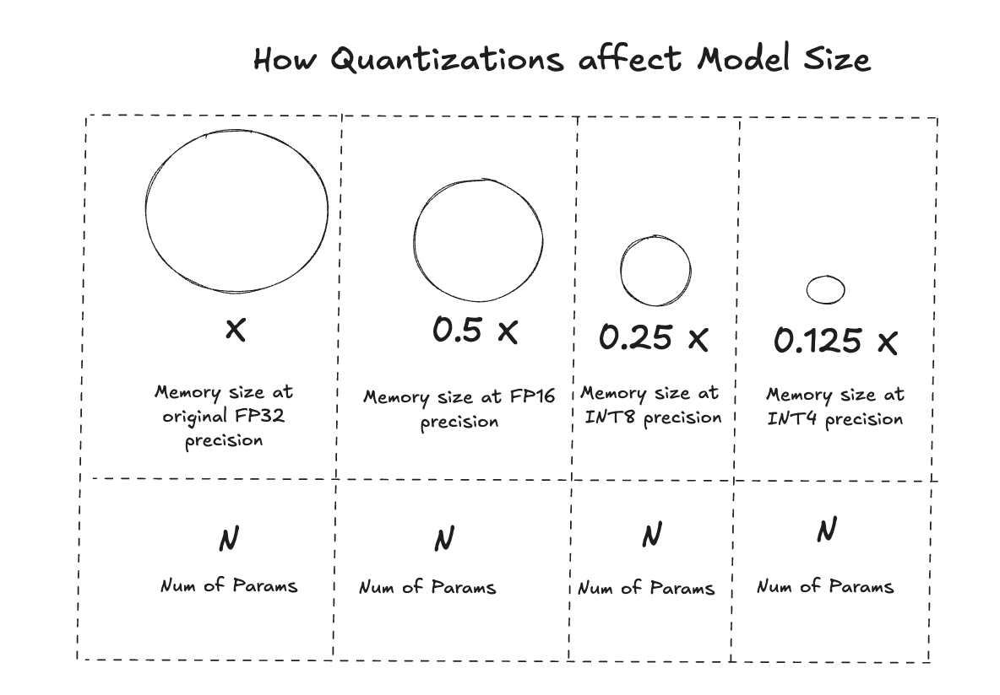
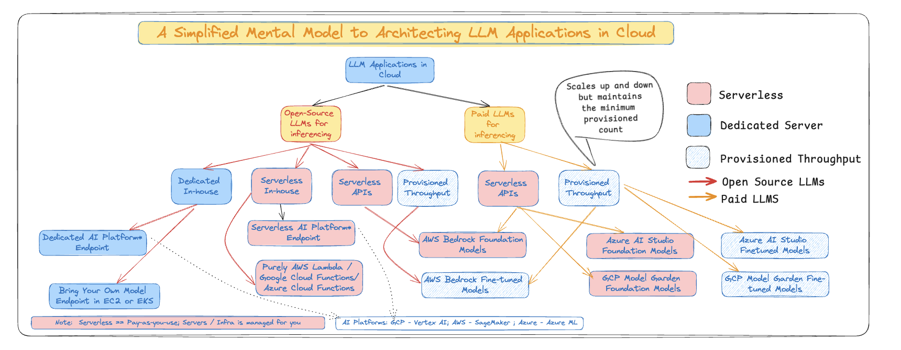
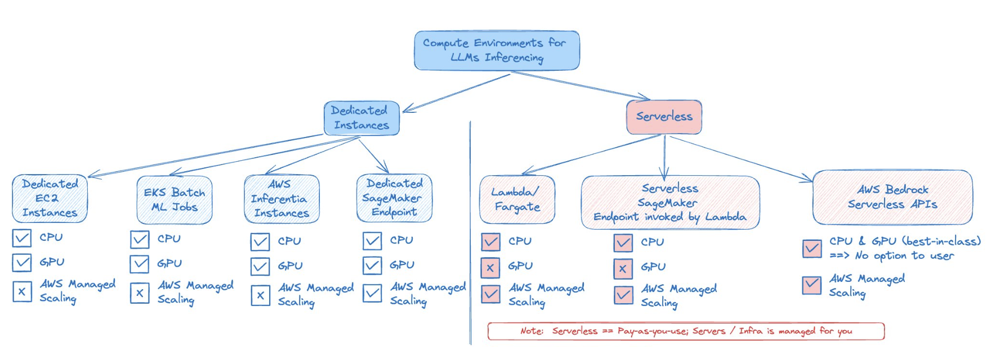
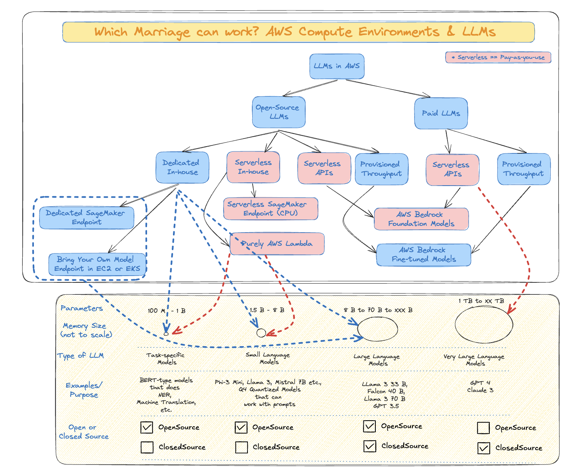

Agenda
I. The Tasks, Models and Compute Thought Process
II. Tasks: Predictive vs Generative Tasks
III. Models: Evolution of LLMs - from a size-centric view
IV. Compute: Cloud Deployment Landscape for LLMs
- The Mental Model for Deploying in Cloud
- The Compute Environments in AWS
- Marriage between Models and Compute
V. Conclusion
I. The Thought Process for use of LLM in applications - Task, Model & Compute
- The below thought process diagram is inspired from the
GenAI Project Life Cycle Diagram by Deeplearning.ai course in Coursera
{kind=link}


Source: Author’s take | Open for debate | Inspired from the GenAI Project Life Cycle Diagram by Deeplearning.ai course in Coursera
Out of Scope:
- I have kept the following thoughts out of scope, for now. But for a reader, they may be very important, hence could be factored into the Thought Process
- Do you need domain-specific models (relevant if your application is run in healthcare/finance/law etc.,)?
- Why does it have to be just one of the 2 options -
Purpose-built/Customized LLMandPrompt-based General Purpose LLM?- Why not a
Prompt-based General Purpose LLM customized with RAG or Fine-tuning?
- Why not a
II. The Discussion on Tasks

Source: Inspired from my fav NLP Researcher / SpaCy Founder - Ines Motwani in a QCon’24 London Talk | Refer Slide 50
Some examples when Generative AI Is Not Needed (Traditional ML Suffices):
- Predictive Analytics: Forecasting future values, like stock prices or equipment failure.
- Classification: Assigning labels to data, such as spam detection or image classification.
- Recommendation Systems: Suggesting products or content based on user behavior.
- Anomaly Detection: Identifying outliers, like fraud detection or quality control.
- Optimization and Causal Inference: Solving problems like route optimization or understanding cause-and-effect relationships.
Some examples when Generative AI Is Needed (Traditional ML won’t be enough): - Content Creation: Generating new text, images, music, or other creative outputs. - Data Augmentation: Creating synthetic data to enhance training datasets. - Personalization: Customizing content or interactions based on user preferences. - Simulations and Scenario Generation: Creating dynamic and realistic training or testing environments. - Creative Problem Solving and Design: Exploring innovative solutions, designs, or artistic ideas.
Source: Reply from GPT 4o for the prompt - “Can you summarize in 5 bullet points when is Gen AI needed and when it is not”
[1] Food for thought: Would you use a bull-dozer to mow a lawn? That is just a waste of resource, honestly.
[2] Food for thought: A slide from Ines Montani’s presentation in Data Hack Summit 2024 on Generative vs Predictive Tasks. Refer here
III. The Discussion on Models
Evolution of LLMs - A Memory Footprint centric View

Source: Author’s take | Open for debate
Key Interpretations: - As we go right in the above diagram, the models become bigger and the tasks become more generic and complex - As models become bigger, they are highly likely to be Closed Source than Open Source (LLM weights, training methodology are shared)
Firstly, how is model memory size computed:
\[\text{Parameters in billions} \times \, \text{Floating Point(FP) Precision of each parameter in byte} = \, \text{Model Memory Size in GB}\]
\[\text{Total Memory taken by the model} = \text{Model Memory Size in GB} + \text{Memory for other components of the model}\]
The Model Sizes can be reduced by Quantization
 Source: Author’s simplified take | Open for debate
How is a model quantized:
Let us look at a Post-training Quantization called Weight Quantization used by Ollama:
- In weight-based quantization, the weights of a trained model are converted to lower precision without requiring any retraining. While this approach is simple, it can result in model performance degradation.
Below is a list of Model Options possible to served by Ollama - one of the popular LLM inferencing framework options.
| Model | Parameters | Size | Download |
|---|---|---|---|
| Llama 3 | 8B | 4.7GB | ollama run llama3 |
| Llama 3 | 70B | 40GB | ollama run llama3:70b |
| Phi 3 Mini | 3.8B | 2.3GB | ollama run phi3 |
| Phi 3 Medium | 14B | 7.9GB | ollama run phi3:medium |
- The default quantization offered by Ollama is INT4 (specifically
Q4_0) 1 - For example, for Phi 3 Mini consisting of 3.8B parameters, the math comes to: \(\text{Memory} = 3.8B \times 0.5 \, \text{byte} = 1.9 \, \text{GB}\) for Storage.
- In the case of Phi3 Mini in Ollama’s implementation, there could be additional memory occupied by tokenizer, embeddings, metadata, and any additional layers or features included in the model - making it 2.3 GB when using inside Ollama
Sources:
1. There are other quantization options offered by Ollama as well. Refer GitHub Ollama Issue Discussion here for an interesting debate
2. Another Quantization Method Dense and Sparse Refer GitHub link and paper link
3. For a better read on the Math behind Quantizations: Refer Introduction to Post Training Quantization Medium Article
4. Do try the Deeplearning.ai short courses centered around Quantization, if interested more
IV. The Debate on Compute power needed for the Models
Architecting LLM Applications in Cloud :: A Cloud Agnostic View
A Cloud Agnostic View

Source: Author’s take | Open for debate
Key Interpretations:
- Typically,
Purpose-built Modelsare deployed in dedicated instances - The Cloud providers have access to Foundation Models (some of those models are even Open Source as well) which are provided to users as pre-built APIs
- Typically Serverless APIs scale with demand, but their performance cannot be guaranteed during sudden spikes.
- In those cases,
Provisioned Throughputcan guarantee to meet those higher demands without degradation in performance. Provisioned Throughput comes with higher baseline cost compared to truly Serverless options - One nuance to note: Mostly the Fine-tuned LLMs, even if the foundation model is Serverless, needs
Provisioned Throughput. Imagine as if one of the nodes/instances saves your fine-tuned model and theProvisioned Throughputscales the contents of that node when the demand increases
Cloud Providers offering the LLMs as APIs: - Azure AI Foundation Models - AWS Bedrock Foundation Models - GCP Model Garden
How are the Compute Environments stacked in AWS for LLM Inferencing
An AWS-specific View

Source: Author’s take | Open for debate
Key Interpretations:
- More Devops/MLOps skills are needed for Dedicated Instances. Serverless eases that skill set burden by helping with
AWS Managed Scaling - Serverless options like
LambdaandFargatecan work for Task specific (Purpose-built Small models)^ and Small Language Models^ - Refer my Serverless attempts for
The Marriage between Compute Environments and LLMs
Different Sized LLMs and their Compute Options in AWS

Source: Author’s take | Open for debate
Key Interpretations: - The upper half of the diagram comprising different Cloud Deployment options is mapped to the lower half consisting of different sized models.
- For lower sized models,
- Task-specific Models can work with Serverless In-house Option like Serverless SageMaker Inference (there are limitations like only CPU and utmost only 6GB memory | refer) and AWS Lambda (with upto 10 GB memory possible).
- On the other end of the size,
- Very Large Language Models are currently possible only as Serverless APIs across Cloud providers. In other words, we cannot host a GPT 4 model in our cloud environment
V. Conclusion
- In this blog, we have seen the different types of tasks that a model addresses, and which among those tasks have the need for Generative AI.
- Also, we have covered how the LLMs, coming in various sizes, can be deployed in Cloud.
Potential Next Steps for the Author (even for the reader):
- Good to focus on the right sized EC2/ SageMaker instances for different LLMs discussed above.
- For example, what is the minimum-sized and recommended compute instances for
- It would also be a good continuation of this blog to focus on
Efficient LLM Inferencingoptions like below
# some popular LLM inference frameworks
- llama.cpp
- ollama
- mistral.rs
- vLLM# some popular technologies to make machine learning models more portable and efficient
# across different hardware and software requirements
- ONNX (Open Neural Network Exchange) - an open format designed to represent machine learning models that provides interoperability between different ML frameworks like PyTorch and Tensorflow.
- GGUF (Generic Graph Update Format) - a format used for representing and updating machine learning models, particularly useful for smaller language models that can run effectively on CPUs with 4-8bit quantization.
# some popular Efficient Machine learning frameworks or libraries
# designed to run ML models efficiently on mobile and edge devices
- PyTorch Mobile
- Tensorflow Lite
- Apple Core ML
- Windows DirectML